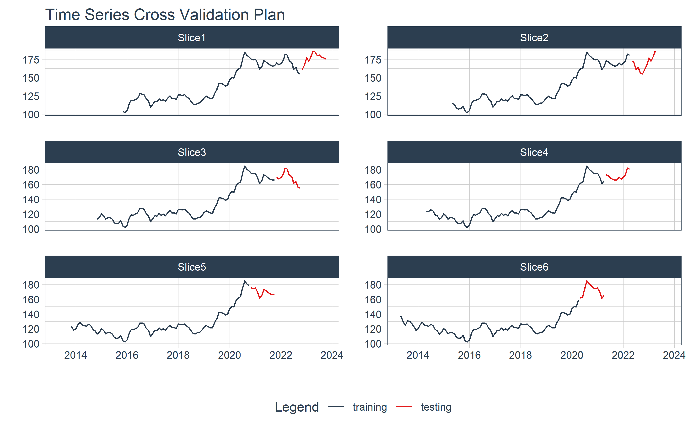
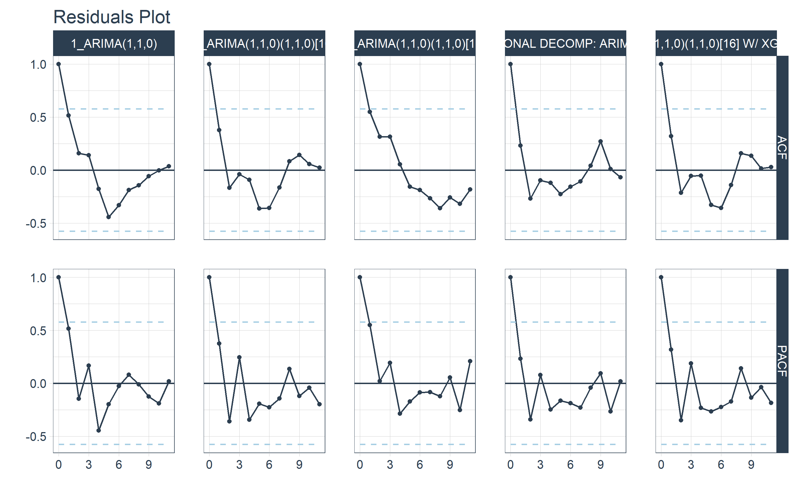
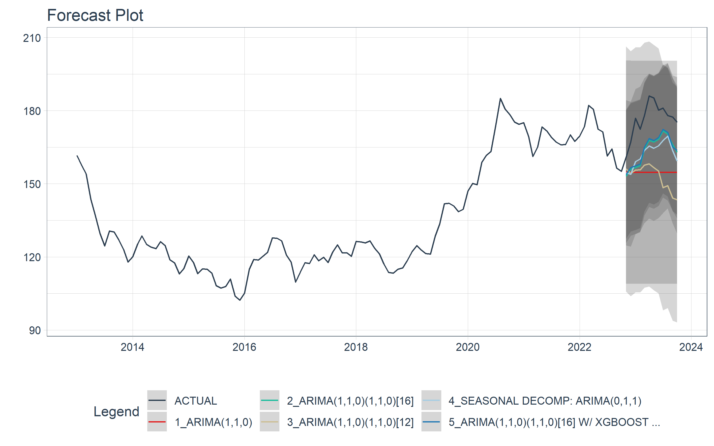
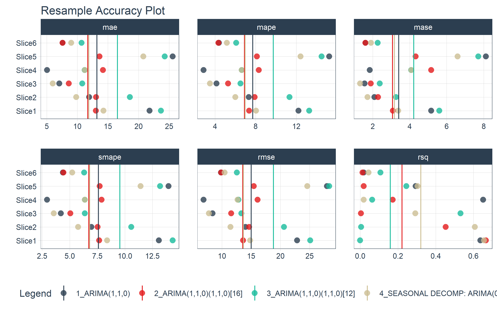

cv <-
gold_mean %>%
time_series_cv(
assess = 12 * 1,
initial = 12 * 7,
skip = 12 * 0.5,
slice_limit = 8,
culmulatime = TRUE
)Introdução
Nessa segunda post sobre a cotação do ouro, vou criar o primeiro modelo para realizar previsão dos valores de interesse. Os dados utilizados, assim como a escolha dos parâmetros utilizados para criar os modelos a seguir foram, respectivamente, adiquridos e escolhidos na parte um dessa série de postos.
Modelos ARIMA-SARIMA
Modelos ARIMA (Autoregressive Integrated Moving Average) e SARIMA (Seasonal ARIMA) são poderosas ferramentas de análise e previsão de séries temporais amplamente usadas em estatísticas e ciência de dados.
Os modelos ARIMA combinam três componentes principais: o componente autoregressivo (AR), que leva em consideração as dependências lineares entre observações passadas; o componente de média móvel (MA), que modela o ruído da série; e a diferenciação integrada (I), que lida com tendências e sazonalidades não estacionárias.
Os modelos ARIMA podem ser representados da seguinte forma:
\[(1 - \phi_1 L - \phi_2 L^2 - \ldots - \phi_p L^p)(1 - L)^d X_t = (1 + \theta_1 L + \theta_2 L^2 + \ldots + \theta_q L^q) \varepsilon_t\]
Onde:
- \((X_t)\) é a série temporal.
- \((L)\) é o operador de defasagem (lag).
- \((p)\) é a ordem do componente AR (auto-regressivo).
- \((d)\) é o número de diferenciações necessárias para tornar a série temporal estacionária.
- \((q)\) é a ordem do componente MA (média móvel).
- \((\phi_1, \phi_2, \ldots, \phi_p)\) são os coeficientes AR.
- \((\theta_1, \theta_2, \ldots, \theta_q)\) são os coeficientes MA.
- \((\varepsilon_t)\) são erros aleatórios.
Os modelos SARIMA, por sua vez, estendem os modelos ARIMA para acomodar dados que exibam componentes periódicos, fazendo isso através da inclusão da componente (S) as demais componentes presentes nos modelos ARIMA.
Os modelos SARIMA podem ser representados da seguinte forma:
\[\begin{split} & (1 - \phi_1 L - \phi_2 L^2 - \ldots - \phi_p L^p)(1 - L)^d \cdot \\ & (1 - \Phi_1 L^S - \Phi_2 L^{2S} - \ldots - \Phi_P L^{PS})X_t = \cdot \\ & (1 + \theta_1 L + \theta_2 L^2 + \ldots + \theta_q L^q)(1 + \Theta_1 L^S + \Theta_2 L^{2S} + \ldots + \Theta_Q L^{QS})\varepsilon_t \end{split}\]
Onde:
- \((X_t)\) é a série temporal.
- \((L)\) é o operador de defasagem (lag).
- \((p)\) é a ordem do componente AR (auto-regressivo).
- \((d)\) é o número de diferenciações necessárias para tornar a série temporal estacionária.
- \((q)\) é a ordem do componente MA (média móvel).
- \((P)\) é a ordem do componente SAR (auto-regressivo sazonal).
- \((D)\) é a ordem da diferenciação sazonal.
- \((Q)\) é a ordem do componente SMA (média móvel sazonal).
- \((S)\) é o período sazonal.
- \((\phi_1, \phi_2, \ldots, \phi_p)\) são os coeficientes AR.
- \((\theta_1, \theta_2, \ldots, \theta_q)\) são os coeficientes MA.
- \((\Phi_1, \Phi_2, \ldots, \Phi_P)\) são os coeficientes SAR.
- \((\Theta_1, \Theta_2, \ldots, \Theta_Q)\) são os coeficientes SMA.
- \((\varepsilon_t)\) são erros aleatórios.
Ambos os modelos exigem a escolha adequada das ordens dos componentes (p, d, q) e (P, D, Q, S), respectivamente, O que pode ser realizado por meio de análise exploratória dos dados. Uma vez ajustados, esses componentes permitem modelar e prever uma ampla variedade de padrões em séries temporais univariadas.
Validação cruzada
Antes de iniciarmos a construção do modelo vamos estabelecer um plano de validação cruzada.
A validação cruzada é uma técnica fundamental em aprendizado de máquina e estatística. Ela ajuda a avaliar o desempenho de modelos ao dividir os dados em conjuntos de treinamento e teste múltiplos, mitigando o viés de seleção do conjunto de teste e fornecendo uma estimativa mais confiável do desempenho do modelo em dados não vistos. Isso é essencial para escolher e ajustar modelos de maneira adequada e geralmente envolve k-folds, onde o conjunto de dados é dividido em k partes iguais, alternando entre treinamento e teste para cada iteração.
cv %>%
tk_time_series_cv_plan() %>%
plot_time_series_cv_plan(mes,media, .facet_ncol = 2, .interactive = FALSE)
Modelos
A seguir, serão criados diversos modelos, todos eles pertencentes à família ARIMA, e, posteriormente, serão comparados. Para a criação desses modelos, diferentes funções e “motores” serão empregados, e estes serão melhor explicados nos próximos tópicos. É importante destacar que a mesma função pode ser utilizada com diferentes “motores”. A escolha dos “motores” é sempre feita por meio da função set_engine().
Auto ARIMA
A função auto_arima foi projetada para facilitar a modelagem e previsão de séries temporais, automatizando o processo de seleção do melhor modelo ARIMA. A função utiliza critérios de avaliação estatística, como o Critério de Informação de Akaike (AIC) e o Critério de Informação Bayesiano (BIC), para avaliar e comparar o ajuste de diferentes modelos. Além dos parâmetros ARIMA, a função também pode lidar com modelos SARIMA e selecionar automaticamente os parâmetros sazonais (P, D, Q, S) quando a série apresenta sazonalidade.
Apesar da automação também é permitido que você insira algumas restrições ou diretrizes para o processo de seleção, como limitar os valores máximos de p, d e q, ou forçar a inclusão de sazonalidade. Contudo a função será utilizado apenas em sua forma automática, deixando os parametros identificados durante a EDA para os demais modelos.
O código a seguir faz a seleção automática do melhor modelo ARIMA através da função arima_reg() e do “motor” auto_arima.
auto_arima <-
arima_reg() %>%
set_engine("auto_arima") %>%
fit(media ~ mes, training(cv$splits[[1]]))SARIMA
Para ajustar o modelo SARIMA, será utilizada a mesma função anterior, arima_reg(), mas com a ‘engine’ arima. Neste modelo, todos os parâmetros (p, d, q) e (P, D, Q, S) serão empregados. Para fins de comparação, serão criados dois modelos SARIMA, um com um componente S de 18 meses e outro com um componente S de 12 meses.
model_arima <-
arima_reg(
seasonal_period = 16,
non_seasonal_ar = 1,
non_seasonal_differences = 1,
non_seasonal_ma = 0,
seasonal_ar = 1,
seasonal_differences = 1,
seasonal_ma = 0
) %>%
set_engine("arima") %>%
fit(media ~ mes, training(cv$splits[[1]]))model_arima2 <-
arima_reg(
seasonal_period = 12,
non_seasonal_ar = 1,
non_seasonal_differences = 1,
non_seasonal_ma = 0,
seasonal_ar = 1,
seasonal_differences = 1,
seasonal_ma = 0
) %>%
set_engine("arima") %>%
fit(media ~ mes, training(cv$splits[[1]]))SARIMA com multiplas periodicidades
Trata-se de uma extensão do modelo SARIMA tradicional, que possibilita a incorporação de múltiplas sazonalidades em uma série temporal. Este modelo é especialmente útil quando os dados apresentam padrões sazonais em diferentes escalas de tempo.
Para a criação desse modelo foi utilizada a função season_reg() e a ‘engine’ stlm_arima. Uma aordagem que combina a decomposição de sazonalidade e tendência usando STLM (Seasonal and Trend decomposition using Loess) com a modelagem ARIMA para fazer previsões em séries temporais. Isso é comum ao usar a decomposição STLM para entender a estrutura da série temporal e, em seguida, aplicar modelos ARIMA ajustados aos dados decompostos para fazer previsões mais precisas.
Serão consideradas apenas as componentes de 18 e 12 meses, uma vez que a componente de 6 meses não se mostrou consistente ao longo dos dados.
arima_m_season <-
seasonal_reg(
seasonal_period_1 = 16,
seasonal_period_2 = 12
) %>%
set_engine("stlm_arima") %>%
fit(media ~ mes, training(cv$splits[[1]]))ARIMA + XGBOOST dos erros
A combinação de modelos SARIMA com algoritmos de machine learning, como o XGBoost (Extreme Gradient Boosting), é uma abordagem útil para melhorar a previsão de séries temporais, especialmente quando os dados exibem padrões complexos e não lineares. A ideia principal é aproveitar a capacidade de ambos os modelos para capturar diferentes aspectos da série temporal.
A função aqui utilizada, arima_boost(), é uma maneira de gerar uma especificação de um modelo de série temporal que utiliza o boosting para melhorar a modelagem de erros (residuais) em Regressores Exógenos. Funciona tanto com o ARIMA “automático” (auto_arima) quanto com o ARIMA padrão (arima). Os principais algoritmos são:
engine = auto_arima_xgboost
ngine = arima_xgboost
Esta função permite não apenas a seleção dos parâmetros comuns aos modelos SARIMA, mas também a seleção dos parâmetros associados ao modelo XGBoost. Como mencionado, essa abordagem tem como foco a melhoria dos resultados relacionados aos regressores exógenos, que são criados no seguinte trecho de código: media ~ mes + as.numeric(mes) + factor(month(mes, label = TRUE), ordered = F).
model_fit_arima_boosted <-
arima_boost(
seasonal_period = 16,
non_seasonal_ar = 1,
non_seasonal_differences = 1,
non_seasonal_ma = 0,
seasonal_ar = 1,
seasonal_differences = 1,
seasonal_ma = 0,
# XGBoost Args
tree_depth = 6,
learn_rate = 0.015,
min_n = 2) %>%
set_engine("arima_xgboost") %>%
fit(media ~ mes + as.numeric(mes) + factor(month(mes, label = TRUE), ordered = F),
data = training(cv$splits[[1]]))Comparando os modelos
Para realizar a comparação dos modelos ajustados, o pacote modeltime disponibiliza a função model_table(), que permite a aplicação de diferentes procedimentos a todos os modelos de uma só vez.
model_table <-
modeltime_table(
auto_arima,
model_arima,
model_arima2,
arima_m_season,
model_fit_arima_boosted
)Calibrando
A seguir, iremos calibrar os modelos usando os dados de teste. A calibração estabelece os fundamentos para a criação dos resultados de acurácia, resíduos dos modelos, e dos intervalos de confiança nas previsões.
calib_table <-
model_table %>%
modeltime_calibrate(testing(cv$splits[[1]]))Residual
Com os modelos calibrados, podemos avaliar os resíduos dos modelos. A função modeltime_residuals(), em conjunto com a função plot_modeltime_residuals(), oferece diversas opções de visualização dos resíduos, que incluem:
- timeplot
- acf
- seasonality
Aqui será utilizado a opção acf/pacf
calib_table %>%
modeltime_residuals() %>%
plot_modeltime_residuals(
.type = "acf",
.interactive = FALSE
)
Acurácia
Operando da mesma forma que as funções relacionadas aos resíduos dos modelos, o código a seguir gera uma tabela com os valores das métricas usadas para avaliar a qualidade dos modelos.
calib_table %>%
modeltime_accuracy() %>%
table_modeltime_accuracy(.interactive = FALSE)| Accuracy Table | ||||||||
| .model_id | .model_desc | .type | mae | mape | mase | smape | rmse | rsq |
|---|---|---|---|---|---|---|---|---|
| 1 | ARIMA(1,1,0) | Test | 21.82 | 12.22 | 5.16 | 13.09 | 22.86 | 0.64 |
| 2 | ARIMA(1,1,0)(1,1,0)[16] | Test | 13.06 | 7.36 | 3.09 | 7.67 | 13.64 | 0.67 |
| 3 | ARIMA(1,1,0)(1,1,0)[12] | Test | 23.67 | 13.27 | 5.60 | 14.34 | 25.11 | 0.00 |
| 4 | SEASONAL DECOMP: ARIMA(0,1,1) | Test | 14.29 | 8.04 | 3.38 | 8.40 | 14.86 | 0.66 |
| 5 | ARIMA(1,1,0)(1,1,0)[16] W/ XGBOOST ERRORS | Test | 12.53 | 7.07 | 2.97 | 7.35 | 13.13 | 0.67 |
Visualização do conjunto de testes
Vamos agora avaliar o desempenho dos modelos em relação aos dados de teste. É importante lembrar que os modelos não foram treinados com o conjunto de dados completo, que abrange aproximadamente 10 anos, mas sim com um intervalo de 7 anos, conforme explicado durante o planejamento da validação cruzada.
calib_table %>%
modeltime_forecast(
new_data = testing(cv$splits[[1]]),
actual_data = gold_mean
) %>%
plot_modeltime_forecast(.interactive = FALSE)
Validação Cruzada - K-fold
Até o momento utilizamos apenas o primeiro folder criado para realização da validação cruzada. Vamos agora varificar o desempenho médio em todos folders criados. A principal vantagem dessa abordagem é fornecer uma avaliação robusta e imparcial do desempenho de um modelo, mitigando problemas como overfitting (ajuste excessivo) e subajuste (underfitting).
Para realizar essa etapa é necessário a utilização do pacote modeltime.resample, uma extenção do pacote modeltime.
Ajustando os modelos aos diferentes conjuntos de dados (folds).
resamples_fitted <- model_table %>%
modeltime_fit_resamples(
resamples = cv,
control = control_resamples(verbose = FALSE)
)
resamples_fitted# Modeltime Table
# A tibble: 5 × 4
.model_id .model .model_desc .resample_results
<int> <list> <chr> <list>
1 1 <fit[+]> ARIMA(1,1,0) <rsmp[+]>
2 2 <fit[+]> ARIMA(1,1,0)(1,1,0)[16] <rsmp[+]>
3 3 <fit[+]> ARIMA(1,1,0)(1,1,0)[12] <rsmp[+]>
4 4 <fit[+]> SEASONAL DECOMP: ARIMA(0,1,1) <rsmp[+]>
5 5 <fit[+]> ARIMA(1,1,0)(1,1,0)[16] W/ XGBOOST ERRORS <lgl [1]> Visualizando o desempenho dos modelos nos diferentes conjuntos de dados (folds)
resamples_fitted %>%
plot_modeltime_resamples(
.point_size = 3,
.point_alpha = 0.8,
.interactive = FALSE
)
Tabela com o desempenho médios dos modelos
resamples_fitted %>%
modeltime_resample_accuracy(summary_fns = mean) %>%
table_modeltime_accuracy(.interactive = FALSE)| Accuracy Table | |||||||||
| .model_id | .model_desc | .type | n | mae | mape | mase | smape | rmse | rsq |
|---|---|---|---|---|---|---|---|---|---|
| 1 | ARIMA(1,1,0) | Resamples | 6 | 13.18 | 7.71 | 3.40 | 7.60 | 15.01 | NA |
| 2 | ARIMA(1,1,0)(1,1,0)[16] | Resamples | 6 | 11.70 | 6.89 | 3.07 | 6.72 | 13.57 | 0.22 |
| 3 | ARIMA(1,1,0)(1,1,0)[12] | Resamples | 6 | 16.55 | 9.72 | 4.22 | 9.53 | 18.81 | 0.16 |
| 4 | SEASONAL DECOMP: ARIMA(0,1,1) | Resamples | 6 | 11.86 | 6.96 | 3.17 | 6.80 | 13.66 | 0.32 |
Criando as previsões
Por último vamos criar previsões futuras dos diferentes modelo que foram ajustados. Para isso vamos reajustar os modelos, desta vez no conjunto de dados completo.
future_forecast_tbl <-
calib_table %>%
modeltime_refit(gold_mean) %>%
modeltime_forecast(
h = "1 year",
actual_data = gold_mean
)future_forecast_tbl %>%
plot_modeltime_forecast(.interactive = FALSE)